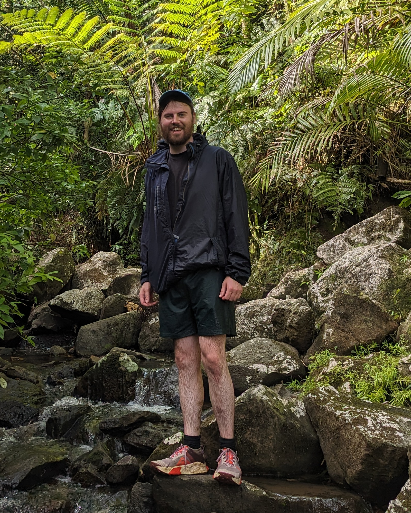

About me

I am a third year PhD student at Utrecht University supervised by Lennart Meier.
Before this, I was a master student in maths at the University of Amsterdam, and an undergrad in maths and theoretical physics at Maynooth University.
I am funded by the National University of Ireland Travelling PhD Studentship.
email: r.quinn@uu.nl
Research
My main focus is in equivariant and chromatic homotopy theory; with a particular focus in structured ring spectra. I'm particularly interested in mutliplicative structures on \(\mathrm{BP}^{(\!(G)\!)}\langle m\rangle\) and related computations.
Publications & Preprints
-
Multiplicative equivariant Thom spectra & structured Real orientations, joint with Qi Zhu, in preperation, draft available (2025).
Summary: Let \(\rho\) be the regular representation of \(C_2\). We show that \(\mathrm{BP}_{\mathbb{R}}\) admits an \(\mathbb{E}_\rho\)-ring, and that \(\mathrm{BP}^{(\!(G)\!)}\) admits a \(\mathrm{coind}^G_{C_2}\mathbb{E}_\rho\)-ring structure. We do this by lifting Quillen's idempotent to an \(\mathbb{E}_\rho\)-ring map. More generally, we show that any homotopy commutative ring map \(\mathrm{MU}\to E^e\) lifts to an \(\mathbb{E}_\rho\)-ring map \(\mathrm{MU}_{\mathbb{R}}\to E\) for any strongly even \(C_2\)-\(\mathbb{E}_\infty\)-ring \(E\). We do this by developing an obstruction theory of structured orientations of equivariant Thom spectra. The essential technology that goes into this is: generalizing the work of Antolín-Camarena–Barthel to the parameterized setting; and constructing a good theory of parameterized left module categories.
-
Spectral properties of light and charm mesons from \(N_f=2+1\) anisotropic lattice QCD, joint with Jonas Glesaaen, Alexander Rothkopf, and Jonivar Skullerud. Proceedings of Science (2019). [PDF] [arXiv]
Summary: We compute temporal correlators and spectral functions for light, open charm and charmonium mesons in the pseudoscalar and vector channel for a range of temperatures below and above the deconfinement transition. The study is carried out using anisotropic lattice QCD with \(2+1\) dynamical flavours, \(a_s = 0.123\) fm and \(a_s/a_\tau = 3.5\). The high-temperature results are benchmarked by comparing them to reconstructed correlators obtained by direct summation of the zero temperature correlator. We use two Bayesian methods to reconstruct the spectral functions: the maximum entropy method and the more recent BR method.
Notes
-
Truncated Brown–Peterson spectra as generalized Thom spectra, (2025). [PDF]
Summary: We show that the truncated Brown–Peterson spectra \(\mathrm{BP}\langle n\rangle\) can be constructed as generalized Thom spectra.
-
A convenient approach to gradings in homotopy theories, (2025). [PDF]
Summary: We give a German approved way to talk about \(\mathrm{RO}(G)\)-graded homotopy groups.
-
Localization theorems in equivariant cohomology (2025). [PDF]
Summary: This note reviews Atiyah–Bott localization theorems in equivariant cohomology. The goal is to highlight the following three things:
- First, that proofs of Atiyah–Bott style localization theorems can be made completely formal.
- Second, give easy to check conditions for when an Atiyah–Bott style localization theorem holds in the integer graded setting, and show that they always hold in the \(\mathrm{RO}(G)\)-graded setting.
- Finally, clarify the situation for non-abelian groups.
This is essentially a cleaned up version of my masters thesis, supervised by Lennart Meier.
Teaching & Supervision
- Topological quantum field theories mini-course
- Morse theory reading project
Misc
-
code for nicer underlines in $\LaTeX$, e.g. compare Sp versus Sp, or Alg versus Alg
copy \(\LaTeX\)%---(nicer underlines)-------------------------------------------------------------------START \makeatletter \usepackage[normalem]{ulem} \usepackage{contour} \usepackage{mathtools} % for \mathllap \renewcommand{\ULdepth}{1.8pt} % how low to make the underline \contourlength{0.8pt} % how big to make the gap in words like map \makeatletter % usage: there are two ways to use this % \myuline{text} puts an underline under text % \myuline[7em]{text} puts an underline under text but shortens it by 7em; of course 7em can be changed. This is useful for stuff like \({\myuline[0.5pt]{\mathrm{Map}}}_G\), vs \({\myuline{\mathrm{Map}}}_G\) \DeclareRobustCommand{\myuline}[2][0pt]{% \ifmmode % draw a slightly shorter underline \uline{\hphantom{#2}\kern-#1}% % restore overall width so following text lines up \kern#1% % overlay the actual content, with proper math style \mathllap{\mathpalette\my@cont@{#2}}% \else \uline{\phantom{#2}\kern-#1}% \kern#1% \llap{\contour{white}{#2}}% \fi } % #1 = current math style, #2 = content \newcommand{\my@cont@}[2]{\contour{white}{\mbox{$\m@th#1#2$}}} \makeatother %------------------------------------------------------------------------------------------END